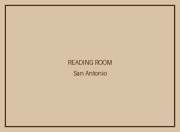

Texas Fiction
Novels and short stories with a strong sense of place.
Ask for: Staff shelf A
Call us: (210) 555-0197
Monday-Saturday 10-7 | Sunday 12-5
Riverbend Books is a neighborhood shop for used fiction, Texas history, local authors and curious readers.
This week: Buy two used paperbacks and receive the third for half price.

Three shelves we keep returning to when customers ask, “What should I read next?”
Novels and short stories with a strong sense of place.
Ask for: Staff shelf A
Classic detectives, modern thrillers and cozy mysteries.
Ask for: Staff shelf B
San Antonio, South Texas and regional history.
Ask for: Staff shelf C
Meet a San Antonio writer and hear a short reading on the first Thursday of each month.
A casual monthly discussion for readers who like clues, suspects and red herrings.
We are an independent neighborhood bookstore focused on used books, local voices and a comfortable place to browse.
We buy selected used books by appointment and donate unsold reading copies to community literacy programs.
412 River Walk Lane
San Antonio, TX 78205
(210) 555-0197
Monday-Saturday: 10 a.m.-7 p.m.
Sunday: 12-5 p.m.